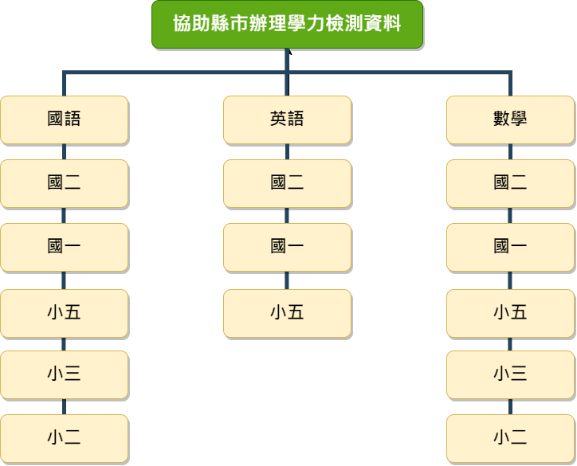

簡介
教育部為協助各縣市其學生學習能力檢測之測驗標準化，於2009年委請本院所屬之「臺灣學生學習成就評量資料庫」團隊，規劃協助縣市辦理學生學習能力檢測計畫（以下簡稱學力檢測）。 各縣市為瞭解學生學習狀況，及早發現待加強學生並啟動積極性教學介入，自2016年起，積極尋求本院合作，將檢測對象向下延伸至國小二、三年級，施測科目也從國語文與數學兩科，增加五年級英語科，同時回應部分縣市對於國中學生學習能力的檢測需求，2016年起亦開始小規模試辦國中一、二年級國語文、數學及英語三科施測。
為有效整合縣市資源，本院於2016年和2017年與參與縣市簽訂工作計畫協議書。其中第七條第（一）項有關著作及成果報告中略以：「本院除學生個人基本資料予以保密外，得基於學術研究、政策參考及教學回饋等情形，彈性運用研究成果。」是以釋出相關資料。
目的與用途
1. 協助縣市將學習能力檢測工具與程序標準化，降低各縣試題研發量，減少預試人數，減低縣市命題壓力與預試成本。
2. 本院實施方式為遵循國際大型測驗評量方式、建立各學科領域專家之工作團隊，以及確立學科評量架構，並依評量架構採以聯合命題方式，建立參與縣市共同之標準化評量工具，提供更具體且詳實之數據分析、試題內容解析，以及教學輔導建議資料。
3. 由縣市自行評估提出參與檢測規模（人數、班級數、校數、科目），本院根據其需求，提供題本予各縣市。2016與2017年起，檢測對象依學習階段而分為國中與國小。
調查範圍與對象
調查主要對象為國小二、三、五年級，國中一、二年級學生。
各科目年級對應如下圖所示。
在受測科目方面，分別為國語文、英語文、數學（小學二、三年級未施測英語文）。
在考試題型方面，分別為選擇題、選填題。評量架構與試題
評量架構與歷年試題
| 類別 | 檔案 | 檔案 |
|---|---|---|
| 學力檢測評量向度與範例題 | 國中段下載 | 國小段下載 |
| 2016-2017年學力檢測正式施測題本（含答案） | 2017下載 | 2016下載 |
成果報告
| 年度（年） | 檔案 |
|---|---|
| 2017 | 2017下載 |
| 2016 | 2016下載 |
105學年協助縣市辦理學力檢測工作計畫（2017年9月27日研習PPT）
| 科目 | 檔案 |
|---|---|
| 國語 |
國中段國文-洪儷瑜教授
國小段國文-陳明蕾教授 |
| 英語 |
國中段英文-李壹明老師
國中段英文-謝名娟老師 國小段英文-蔡幸蓉講師 國小段英文-謝名娟老師 |
| 數學 |
國中段數學-左台益教授
國中段數學-吳慧珉老師 國小段數學-許德田校長 國小段數學-吳慧珉老師 |
資料清單
| 施測年度 | 年段 | 科目 | 學科測驗 | |
|---|---|---|---|---|
| 選擇題試題作答反應 | 選填題試題作答反應 | |||
| 2017 | 國小二年級 | 國 | ||
| 國小三年級 | 數 | |||
| 國小五年級 | 國 | |||
| 數 | ||||
| 英 | ||||
| 國中一年級 | 國 | |||
| 數 | ||||
| 英 | ||||
| 國中二年級 | 國 | |||
| 數 | ||||
| 英 | ||||
| 2016 | 國小二年級 | 國 | ||
| 數 | ||||
釋出資料管理
釋出項目及格式
學力檢測釋出項目資料，說明如下：
| 項目 | 內容 | 格式 |
|---|---|---|
| 2016、2019年度試題作答反應 |
2016年：學生作答之國小二、三年級國、數作答反應，國小五年級、國中一、二年級國、英、數作答反應 2017年：學生作答之國小二年級國作答反應，國小三年級數作答反應，國小五年級、國中一、二年級國、英、數作答反應 |
1、 csv檔，內含受測學生編號、學校碼、班級碼及試題反應編碼說明 2、 提供考題 |
釋出要點 / 線上申請與審查
學生學習成就資料申請
一、依「本院學生學習成就資料釋出要點」辦理。
二、符合下列資格始得申請
| 類別 | 人員 | 申請資料 |
|---|---|---|
| 第一類 | 第一類申請者：國內學術研究機構及國內公私立大專院校之專任研究人員（含博士後研究）、專任教師，以及公務機關人員，需於申請時提供可辨識身分之證件上傳。 | 學生層級之資料 |
| 第二類 | 第二類申請者：國內外公私立大專院校博碩士在學學生，經指導教授於資料申請書上親筆簽名（若尚無指導教授，則請所長於資料使用申請書上親筆簽名）。 | 學生層級之資料 |
| 第三類 | 第三類申請者：本院所屬研究人員（含博士後研究）、公務人員，以及行政人員。 | 學生及學校層級資料 |
三、各申請案採線上申請及審查，流程如下：
| 步驟 | 內容 |
|---|---|
| 1 | 閱讀並填寫資料使用申請書（含共同使用者申請書）、資料使用合約書 |
| 2 | 至釋出資料申請網頁（tasarelease）填寫基本資料、勾選想要申請資料，並完成說明1申請書上傳 |
| 3 | 本院接獲申請案後進行線上審查後回復，審查時間約1個月，審查重點如下： (1) 申請資料是否為研究計畫內容所需。 (2) 研究問題分析與研究方法應用是否正確。 |
文件下載
聯繫方式
申請資料時如遇共同使用者，須在資料申請表上將其同時列為資料使用人，並註明共同使用者個人基本資料，共同遵守資料使用規定。若有問題可來信詢問：wantiend@mail.naer.edu.tw，張宛婷小姐。